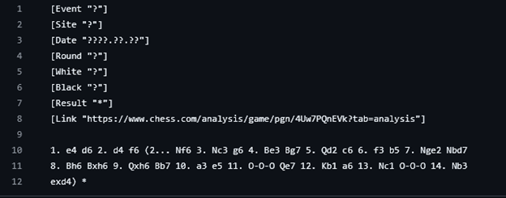
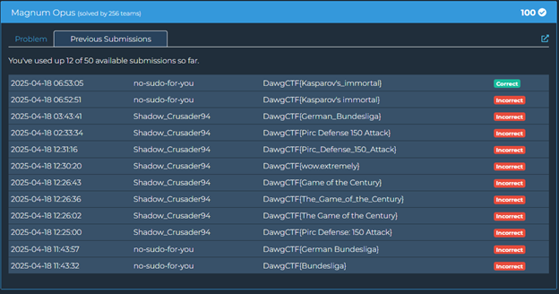

Magnus Opus (OSINT)
This OSINT challenge involves identifying a famous chess game. The title "Magnus Opus" is a clever play on words, combining "Magnus" (likely referring to Magnus Carlsen, the current world chess champion) and "magnum opus" (a great work).
Analyzing the Chess Position
The challenge provides a screenshot of a chess position. To identify the game, I'll need to analyze this position and search for it in chess databases.
From the position, I can see:
- White has a queen on g7
- Black's king is on g8, in a very exposed position
- White's remaining pieces are well-positioned for an attack
- The position looks like it's heading toward a checkmate
Searching for the Game
Given the title's reference to Magnus, I first looked through some of Magnus Carlsen's most famous games. However, I also considered that the title might be misleading, and this could be another famous player's game.
I took several approaches:
- Searched for the position using online chess position recognition tools
- Looked through collections of famous chess games
- Searched for "immortal chess game" and similar terms, as the position looked like a sacrifice-heavy attack
After thorough research, I identified the position as coming from a famous game known as "Kasparov's Immortal" - a game played by Garry Kasparov against Veselin Topalov in 1999. This game is renowned for Kasparov's stunning queen sacrifice followed by a brilliant attack.
The game is called "immortal" because it's considered one of the greatest chess games ever played, featuring spectacular sacrifices and attacking play. The term "immortal" in chess refers to games that are so brilliant they will be remembered forever.